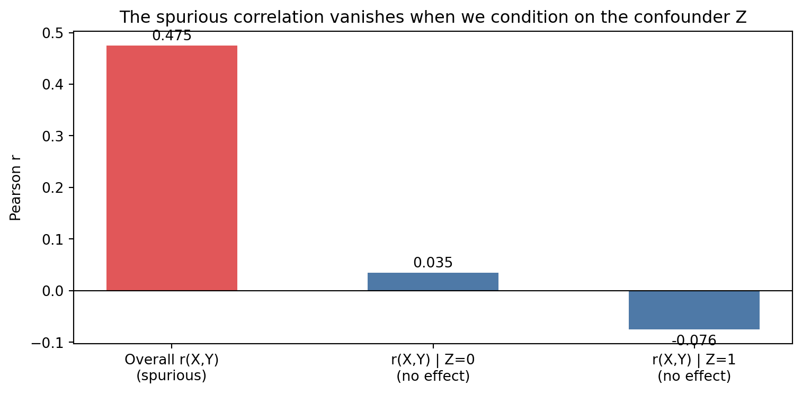

Describe how humans represent and use causal schemas
Understand Kahneman and Tversky’s research on heuristics and biases in causal judgment
Explain the developmental evidence that children reason causally before they can articulate it
Simulate common human causal errors in Python and compare with normative causal inference
16.1 Causal Schemas and Intuitive Theories
Human beings are compulsive causal theorists. We do not simply observe that events co-occur; we construct explanations for why they do. An infant who bats a mobile and watches it swing quickly learns that batting causes swinging — not merely that batting and swinging happen around the same time.
This drive to build causal models is so fundamental that psychologists call it the intentionality bias: humans routinely attribute causes even to inanimate objects. A triangle chasing a circle in a two-second animation reliably prompts people to describe the triangle as “bullying” the circle, or the circle as “escaping.” We cannot help but see causation.
This is not irrational. Causal models are compressive: a rich description of a mechanism can predict infinitely many future observations. An organism that learns causal structure, rather than merely recording co-occurrences, has an enormous advantage in navigating the world.
16.2 Where Human Causal Reasoning Goes Wrong
But human causal intuition is not a calibrated Bayesian inference machine. It is a collection of evolved heuristics, fast and usually good enough, but systematically wrong in predictable ways.
Correlation bias. People overestimate the causal significance of co-occurring events, especially vivid or memorable ones. Post hoc ergo propter hoc — “after this, therefore because of this” — is the formal name for this fallacy, and it is a deeply natural error.
Availability heuristic.Tversky and Kahneman (1974) showed that people judge causal probability by how easily an explanation comes to mind. Causes that generate vivid, easily imagined scenarios are rated as more probable than statistically more likely but less memorable alternatives.
Confounding blindness. People are poor at identifying confounders spontaneously. Without prompting, most people do not ask “is there a third variable causing both?” They see correlation and infer causation.
Neglect of base rates. When making causal judgments, people over-weight specific evidence and under-weight prior probabilities — a systematic violation of Bayes’ theorem.
16.3 Children and Causal Intervention
Alison Gopnik and colleagues have shown that children as young as two or three can use intervention — a distinctly Rung 2 operation — to learn about causal structure. Presented with a novel device that lights up when certain blocks are placed on it, children quickly figure out which blocks are causally relevant through interventional testing, even when the statistical patterns are ambiguous.
In some respects, children are better causal learners than adults: less committed to existing theories, more willing to explore, more likely to test rather than observe.
Code
import numpy as npimport matplotlib.pyplot as pltfrom scipy.stats import pearsonrrng = np.random.default_rng(5)n =500# True causal structure: Z → X, Z → Y (confounder)# No direct X → Y effectZ = rng.binomial(1, 0.5, n)X = rng.binomial(1, 0.7* Z +0.1, n) # X influenced by ZY = rng.binomial(1, 0.7* Z +0.1, n) # Y influenced by Z (not by X)# Spurious correlation between X and Yr_xy, p_xy = pearsonr(X, Y)# People tend to rate causal strength proportional to correlationco_occurrence_freq = (X & Y).mean()anti_correlation = (~X.astype(bool) &~Y.astype(bool)).mean()# Normative: after conditioning on Z, correlation vanishesr_xy_given_z0 = pearsonr(X[Z==0], Y[Z==0])[0]r_xy_given_z1 = pearsonr(X[Z==1], Y[Z==1])[0]labels = ['Overall r(X,Y)\n(spurious)', 'r(X,Y) | Z=0\n(no effect)', 'r(X,Y) | Z=1\n(no effect)']values = [r_xy, r_xy_given_z0, r_xy_given_z1]colors = ['#e15759', '#4e79a7', '#4e79a7']fig, ax = plt.subplots(figsize=(8, 4))bars = ax.bar(labels, values, color=colors, width=0.5)ax.axhline(0, color='black', linewidth=0.8)ax.set_ylabel("Pearson r")ax.set_title("The spurious correlation vanishes when we condition on the confounder Z")for bar, val inzip(bars, values): ax.text(bar.get_x() + bar.get_width()/2, val +0.01if val >=0else val -0.03,f"{val:.3f}", ha='center', fontsize=10)plt.tight_layout()plt.show()print(f"Spurious correlation (unadjusted): r = {r_xy:.3f}, p = {p_xy:.4f}")print(f"After conditioning on Z=0: r = {r_xy_given_z0:.3f}")print(f"After conditioning on Z=1: r = {r_xy_given_z1:.3f}")

Figure 16.1: Simulating the correlation bias: human causal estimates follow co-occurrence frequency, not actual causal strength.
Spurious correlation (unadjusted): r = 0.475, p = 0.0000
After conditioning on Z=0: r = 0.035
After conditioning on Z=1: r = -0.076
16.4 Summary
Humans are compulsive causal reasoners — we construct causal models spontaneously and automatically, even for inanimate events.
Human causal intuition is a collection of fast heuristics that are usually useful but systematically biased: correlation bias, availability, confounding blindness, base-rate neglect.
Children use interventional testing to learn causal structure, demonstrating Rung 2 reasoning at an early age.
The normative standard for causal judgment is provided by the causal inference framework (Part II); departures from this standard are predictable and well-documented.
16.5 Further Reading
Tversky and Kahneman (1974) is the foundational paper on heuristics and biases. Kahneman’s Thinking, Fast and Slow (2011) is the accessible book-length treatment. For the developmental work, Gopnik et al. (2004), A Theory of Causal Learning in Children, is the key reference.
Tversky, Amos, and Daniel Kahneman. 1974. Judgment Under Uncertainty: Heuristics and Biases. In Science, vol. 185.
Source Code
---title: "Human Causal Reasoning"---::: {.callout-note icon=false}## Learning Objectives- Describe how humans represent and use causal schemas- Understand Kahneman and Tversky's research on heuristics and biases in causal judgment- Explain the developmental evidence that children reason causally before they can articulate it- Simulate common human causal errors in Python and compare with normative causal inference:::## Causal Schemas and Intuitive TheoriesHuman beings are compulsive causal theorists. We do not simply observe that events co-occur; we construct explanations for why they do. An infant who bats a mobile and watches it swing quickly learns that batting causes swinging — not merely that batting and swinging happen around the same time.This drive to build causal models is so fundamental that psychologists call it the *intentionality bias*: humans routinely attribute causes even to inanimate objects. A triangle chasing a circle in a two-second animation reliably prompts people to describe the triangle as "bullying" the circle, or the circle as "escaping." We cannot help but see causation.This is not irrational. Causal models are compressive: a rich description of a mechanism can predict infinitely many future observations. An organism that learns causal structure, rather than merely recording co-occurrences, has an enormous advantage in navigating the world.## Where Human Causal Reasoning Goes WrongBut human causal intuition is not a calibrated Bayesian inference machine. It is a collection of evolved heuristics, fast and usually good enough, but systematically wrong in predictable ways.**Correlation bias.** People overestimate the causal significance of co-occurring events, especially vivid or memorable ones. Post hoc ergo propter hoc — "after this, therefore because of this" — is the formal name for this fallacy, and it is a deeply natural error.**Availability heuristic.** @tversky1974judgment showed that people judge causal probability by how easily an explanation comes to mind. Causes that generate vivid, easily imagined scenarios are rated as more probable than statistically more likely but less memorable alternatives.**Confounding blindness.** People are poor at identifying confounders spontaneously. Without prompting, most people do not ask "is there a third variable causing both?" They see correlation and infer causation.**Neglect of base rates.** When making causal judgments, people over-weight specific evidence and under-weight prior probabilities — a systematic violation of Bayes' theorem.## Children and Causal InterventionAlison Gopnik and colleagues have shown that children as young as two or three can use intervention — a distinctly Rung 2 operation — to learn about causal structure. Presented with a novel device that lights up when certain blocks are placed on it, children quickly figure out which blocks are causally relevant through interventional testing, even when the statistical patterns are ambiguous.In some respects, children are *better* causal learners than adults: less committed to existing theories, more willing to explore, more likely to test rather than observe.```{python}#| label: fig-causal-human-errors#| fig-cap: "Simulating the correlation bias: human causal estimates follow co-occurrence frequency, not actual causal strength."import numpy as npimport matplotlib.pyplot as pltfrom scipy.stats import pearsonrrng = np.random.default_rng(5)n =500# True causal structure: Z → X, Z → Y (confounder)# No direct X → Y effectZ = rng.binomial(1, 0.5, n)X = rng.binomial(1, 0.7* Z +0.1, n) # X influenced by ZY = rng.binomial(1, 0.7* Z +0.1, n) # Y influenced by Z (not by X)# Spurious correlation between X and Yr_xy, p_xy = pearsonr(X, Y)# People tend to rate causal strength proportional to correlationco_occurrence_freq = (X & Y).mean()anti_correlation = (~X.astype(bool) &~Y.astype(bool)).mean()# Normative: after conditioning on Z, correlation vanishesr_xy_given_z0 = pearsonr(X[Z==0], Y[Z==0])[0]r_xy_given_z1 = pearsonr(X[Z==1], Y[Z==1])[0]labels = ['Overall r(X,Y)\n(spurious)', 'r(X,Y) | Z=0\n(no effect)', 'r(X,Y) | Z=1\n(no effect)']values = [r_xy, r_xy_given_z0, r_xy_given_z1]colors = ['#e15759', '#4e79a7', '#4e79a7']fig, ax = plt.subplots(figsize=(8, 4))bars = ax.bar(labels, values, color=colors, width=0.5)ax.axhline(0, color='black', linewidth=0.8)ax.set_ylabel("Pearson r")ax.set_title("The spurious correlation vanishes when we condition on the confounder Z")for bar, val inzip(bars, values): ax.text(bar.get_x() + bar.get_width()/2, val +0.01if val >=0else val -0.03,f"{val:.3f}", ha='center', fontsize=10)plt.tight_layout()plt.show()print(f"Spurious correlation (unadjusted): r = {r_xy:.3f}, p = {p_xy:.4f}")print(f"After conditioning on Z=0: r = {r_xy_given_z0:.3f}")print(f"After conditioning on Z=1: r = {r_xy_given_z1:.3f}")```## Summary- Humans are compulsive causal reasoners — we construct causal models spontaneously and automatically, even for inanimate events.- Human causal intuition is a collection of fast heuristics that are usually useful but systematically biased: correlation bias, availability, confounding blindness, base-rate neglect.- Children use interventional testing to learn causal structure, demonstrating Rung 2 reasoning at an early age.- The normative standard for causal judgment is provided by the causal inference framework (Part II); departures from this standard are predictable and well-documented.## Further Reading@tversky1974judgment is the foundational paper on heuristics and biases. Kahneman's *Thinking, Fast and Slow* (2011) is the accessible book-length treatment. For the developmental work, Gopnik et al. (2004), *A Theory of Causal Learning in Children*, is the key reference.